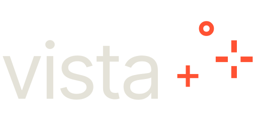
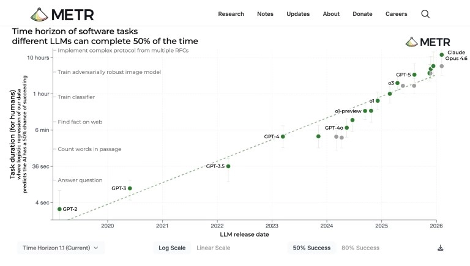

Modo consultor
Chat
- Te explica el camino.
- Devuelve contexto, no ejecución.
- Sirve para pensar, aprender o decidir.
- El siguiente paso lo da una persona.
Entrega principal: contexto

De chat a ejecución: cómo delegar trabajo real en escritorio y terminal sin perder criterio.


Hoy vamos de la conversación al trabajo real.
2023-2024: La IA era una ventana de chat. Le pedías "analiza estos 50 PDFs", recibías un párrafo explicándote lo que encontró, y luego tú abrías cada archivo, copiabas datos a Excel, formateabas. La IA opinaba; tú ejecutabas manualmente.
2025-2026: La IA es un agente. Le pides lo mismo, pero ahora él abre tus carpetas, lee los PDFs, crea el Excel con fórmulas y gráficos, y lo guarda en tu escritorio listo para enviar. Tú revisas el resultado; él ejecutó el proceso.

Un Skill es un paquete reutilizable de instrucciones, archivos y criterios para una tarea que se repite. Sirve para que Claude haga ese trabajo de la misma manera cada vez.
skill-creator, que es un Skill para crear Skills, conviertes ese proceso en uno nuevo sin arrancar de cero.Una landing sobria y responsive, con CTA claro e interacción real que sí convierte.
Mejora coding, planning y computer use. Además abre la beta de 1M tokens para contextos enormes.
Plugins, connectors y skills quedan mejor organizados, con más control para equipos y admins.
Puedes dejarle un trabajo recurrente o lanzarlo on-demand sin rehacer el prompt cada vez.
Ves el mismo trabajo desde iPhone o Android mientras sigue corriendo en tu desktop.
Con computer use puede abrir archivos, usar herramientas y navegar la pantalla para avanzar tareas.
Aprueba acciones seguras solo y frena las riesgosas. Así delegas más sin soltar el control.
Capacitamos equipos para usar IA con criterio, aterrizar casos de uso y convertir ideas en practicas reales.